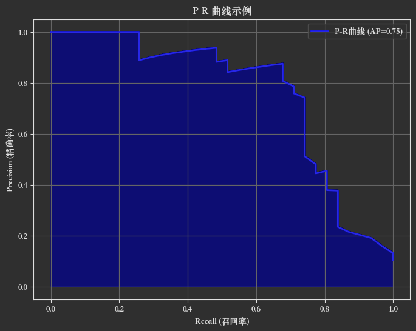
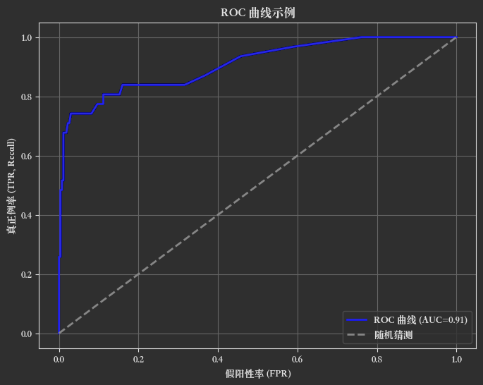

第二章：模型评估¶
一、准确率¶
1️⃣ 什么是准确率（Accuracy）？¶
准确率（Accuracy）是分类模型最常用的评估指标之一。它表示模型正确预测的样本数量占总样本数量的比例。
准确率 = 正确预测的数量 ÷ 总预测的数量
2️⃣ 数学公式¶
如果你有一个二分类问题（正例和负例），混淆矩阵可以表示为：
| 预测正例 (P') | 预测负例 (N') | |
|---|---|---|
| 真实正例 (P) | TP (真阳性) | FN (假阴性) |
| 真实负例 (N) | FP (假阳性) | TN (真阴性) |
其中：
- TP：预测为正例，且真实为正例。
- TN：预测为负例，且真实为负例。
- FP：预测为正例，但真实为负例。
- FN：预测为负例，但真实为正例。
那么准确率公式为：
3️⃣ Python 代码实现¶
下面用 scikit-learn 举个例子：
from sklearn.metrics import accuracy_score
# 假设真实标签和预测标签如下
y_true = [1, 0, 1, 1, 0, 1, 0]
y_pred = [1, 0, 1, 0, 0, 1, 1]
# 计算准确率
accuracy = accuracy_score(y_true, y_pred)
print("准确率：", accuracy)
输出结果
准确率：0.7142857142857143
4️⃣ 准确率的优缺点¶
✅ 优点：¶
- 简单直观，易于理解。
- 适用于类别平衡的数据集。
❌ 缺点：¶
- 当类别分布不均衡（即样本类别极度不平衡）时，准确率可能具有误导性。
- 例如，95% 的样本是负例，只要模型全预测负例，准确率就能达到 95%，但模型其实没有真正学到有用的信息。
5️⃣ 适用场景¶
- 适合 类别分布均衡 的二分类或多分类问题。
- 不适合类别极不平衡的情况（此时更推荐使用 F1-score、AUC-ROC、召回率、精确率等指标）。
二、精确率与召回率¶
1️⃣ 精确率（Precision）¶
精确率衡量的是：在所有被模型预测为正例的样本中，有多少是真正的正例。
换句话说，它关注 预测为正例的样本中有多少是准确的。
其中：
- TP（True Positive）：真正例，预测为正例且真实也是正例。
- FP（False Positive）：假阳性，预测为正例但真实是负例。
2️⃣ 召回率（Recall）¶
召回率衡量的是： 在所有真实正例的样本中，有多少被模型成功预测为正例。
它关注 模型捕获正例的能力。
其中：
- FN（False Negative）：假阴性，真实为正例但被预测为负例。
3️⃣ 代码实现¶
使用 scikit-learn 中的 precision_score 和 recall_score：
from sklearn.metrics import precision_score, recall_score
# 假设真实标签和预测标签
y_true = [1, 0, 1, 1, 0, 1, 0]
y_pred = [1, 0, 1, 0, 0, 1, 1]
# 计算精确率
precision = precision_score(y_true, y_pred)
print("精确率：", precision)
# 计算召回率
recall = recall_score(y_true, y_pred)
print("召回率：", recall)
输出结果
精确率：0.75 召回率：0.6
4️⃣ 二者关系与权衡¶
- 精确率高：预测为正例时，更有把握是真的正例（误报少）。
- 召回率高：能找到更多的真实正例（漏报少）。
但是，二者通常是一对“跷跷板”：
如果你想提高召回率，通常需要让模型更“宽松”，多预测正例，可能会引入更多的假阳性，导致精确率下降；反之，若提高精确率，召回率可能下降。
5️⃣ 适用场景¶
| 场景 | 更看重 | 解释 |
|---|---|---|
| 垃圾邮件检测 | 精确率 | 不希望正常邮件被误判为垃圾邮件。 |
| 癌症筛查 | 召回率 | 尽可能发现所有的癌症患者（不怕误报，但怕漏报）。 |
| 欺诈检测 | 召回率 | 不想漏掉任何潜在的欺诈行为，宁可多抓一些可疑交易。 |
| 广告点击预测 | 精确率 | 不希望把不相关的广告推送给用户。 |
6️⃣ F1-score：综合指标¶
F1-score 是 精确率（Precision）和召回率（Recall） 的调和平均数，是一个综合考虑分类模型性能的指标，尤其适合：
- 样本不平衡（如疾病预测、欺诈检测）
- 既不能漏掉真阳性（高 Recall），也不能误报太多（高 Precision）的任务
当你想要平衡 精确率 和 召回率 时，可以使用 F1-score：
它是它们的调和平均数。 常用于二者都重要的场景。
F1-score 是在 Precision 和 Recall 存在矛盾时，用于权衡这两个指标，特别适合样本不平衡分类任务的重要评估指标。
7️⃣ 混淆矩阵中的直观理解¶
| 符号 | 含义 | 举例（肿瘤检测） |
|---|---|---|
| TP | 真阳性：正类被正确预测为正类 | 检测出患病者确实患病 |
| FP | 假阳性：负类被错误预测为正类 | 检测出患病者实际没病（误判） |
| FN | 假阴性：正类被错误预测为负类 | 没检测出患病者其实有病（漏判） |
| TN | 真阴性：负类被正确预测为负类 | 正常人被正确识别为正常 |
基于混淆矩阵：
| 预测正例 (P') | 预测负例 (N') | |
|---|---|---|
| 真实正例 (P) | TP | FN |
| 真实负例 (N) | FP | TN |
- 精确率：看 预测正例那一列 →
TP / (TP + FP) - 召回率：看 真实正例那一行 →
TP / (TP + FN)
| 指标 | 公式 | 意义说明 |
|---|---|---|
| Accuracy 准确率 | \( \frac{TP + TN}{TP + FP + FN + TN} \) | 总体预测正确的比例 |
| Precision 精确率 | \( \frac{TP}{TP + FP} \) | 预测为正中有多少是真正的正 |
| Recall 召回率 | \( \frac{TP}{TP + FN} \) | 实际为正中被预测出来的比例 |
| F1-score | \( 2 \cdot \frac{Precision \cdot Recall}{Precision + Recall} \) | 精确率与召回率的平衡 |
8️⃣ P-R 曲线¶
P-R 曲线（Precision-Recall Curve），中文叫 精确率-召回率曲线，是用来可视化和评价二分类模型性能的曲线。
横轴是：召回率（Recall）也叫灵敏度，表示在所有真正例中，模型找回的比例。
纵轴是：精确率（Precision）：也叫查准率，表示模型预测为正例中，真正例的比例。
🟩 P-R 曲线的绘制¶
对于二分类模型（比如逻辑回归、随机森林等），模型通常会输出一个 概率分数，表示样本属于正类的可能性。通过不同的 阈值，把这个分数转换成具体的「正类/负类」标签。
步骤：
1️⃣ 从最高分数到最低分数，依次选取不同的阈值。
2️⃣ 对于每个阈值，计算对应的 Precision 和 Recall。
3️⃣ 把每一对 (Recall, Precision) 作为一个坐标点，依次连接，就得到了 P-R 曲线。
🟩 P-R 曲线的意义¶
- 召回率高：模型能识别更多正例，假阳性风险高。
- 精确率高：模型预测更准确，假阴性风险高。
- 二者往往互相制约，P-R 曲线可以全面反映这个权衡关系。
🟩 代码实现¶
import numpy as np
from sklearn.datasets import make_classification
from sklearn.model_selection import train_test_split
from sklearn.ensemble import RandomForestClassifier
from sklearn.metrics import precision_recall_curve, average_precision_score
import matplotlib.pyplot as plt
plt.rcParams["font.family"] = "Songti SC"
# 1️⃣ 生成二分类模拟数据
X, y = make_classification(n_samples=1000, n_features=20, n_classes=2,
n_informative=2, weights=[0.9, 0.1], random_state=42)
# 2️⃣ 划分训练集和测试集
X_train, X_test, y_train, y_test = train_test_split(
X, y, test_size=0.3, random_state=42, stratify=y
)
# 3️⃣ 使用随机森林进行训练
clf = RandomForestClassifier(n_estimators=100, random_state=42)
clf.fit(X_train, y_train)
# 4️⃣ 得到预测概率
y_scores = clf.predict_proba(X_test)[:, 1] # 只要正类的概率分数
# 5️⃣ 计算 Precision-Recall 曲线
precision, recall, thresholds = precision_recall_curve(y_test, y_scores)
# 6️⃣ 计算 Average Precision (AP)
ap_score = average_precision_score(y_test, y_scores)
# 7️⃣ 绘制 P-R 曲线
plt.figure(figsize=(8, 6))
plt.plot(recall, precision, color='b', lw=2, label=f'P-R曲线 (AP={ap_score:.2f})')
plt.fill_between(recall, precision, alpha=0.2, color='b')
plt.xlabel('Recall (召回率)')
plt.ylabel('Precision (精确率)')
plt.title('P-R 曲线示例')
plt.legend()
plt.grid(True)
plt.show()
输出结果

三、ROC曲线¶
ROC 曲线是二分类模型评估的重要可视化工具。
横轴：假阳性率（FPR, False Positive Rate）\(\text{FPR} = \frac{FP}{FP + TN}\) 表示负例被误判为正例的比例。
纵轴：真正例率（TPR, True Positive Rate，也叫 Recall）\(\text{TPR} = \frac{TP}{TP + FN}\) 表示正例被正确预测的比例。
🟢 为什么用 ROC 曲线？¶
ROC 曲线用于观察模型在不同阈值下的表现。 阈值：把概率分数转成「正/负」标签的分界线。
随着阈值从 1 ➡ 0，FPR、TPR 都会变化，连成一条曲线，就得到了 ROC 曲线。
🟩 如何绘制 ROC 曲线？¶
1️⃣ 模型输出概率分数（正例分数）。
2️⃣ 取不同的阈值，计算 TPR 和 FPR。
3️⃣ 将所有 (FPR, TPR) 画在坐标系中，连接起来。
🟩 理想情况 & 随机情况¶
- 理想模型：TPR 快速上升，曲线非常靠近左上角（0,1）点。
- 随机模型：TPR 与 FPR 相等，曲线接近对角线（y=x）。
🟩 ROC 曲线下面积（AUC）¶
ROC 曲线的面积称为 AUC（Area Under Curve）。
- AUC = 1：完美模型。
- AUC = 0.5：随机猜测。
- AUC 越接近 1，模型越好。
P-R vs ROC：场景对比总结表¶
| 场景或属性 | ROC 曲线 | P-R 曲线 |
|---|---|---|
| 数据是否平衡 | 适用于样本平衡 | 更适用于样本不平衡（正类稀缺） |
| 是否关注负类预测 | 是 | 否（只关心正类预测情况） |
| 模型表现是否会被负类影响 | 会 | 不会 |
| 随机模型表现 | 对角线 AUC=0.5 | Precision 线是一个常数 |
| 高 FP 模型看起来怎么样 | 可能仍有高 AUC（误导性高） | 会导致 Precision 下降，真实反映模型能力 |
| 可解释性 | 整体表现 | 关注“正类”的表现，更接近实际业务需求 |
🟢 Python 绘制 ROC 曲线完整示例¶
import numpy as np
from sklearn.datasets import make_classification
from sklearn.model_selection import train_test_split
from sklearn.ensemble import RandomForestClassifier
from sklearn.metrics import roc_curve, auc
import matplotlib.pyplot as plt
# 1️⃣ 生成二分类不平衡数据
X, y = make_classification(n_samples=1000, n_classes=2, weights=[0.9, 0.1],
n_informative=2, n_features=20, random_state=42)
# 2️⃣ 划分数据集
X_train, X_test, y_train, y_test = train_test_split(
X, y, test_size=0.3, random_state=42, stratify=y
)
# 3️⃣ 训练模型
clf = RandomForestClassifier(n_estimators=100, random_state=42)
clf.fit(X_train, y_train)
# 4️⃣ 获取预测概率
y_scores = clf.predict_proba(X_test)[:, 1]
# 5️⃣ 计算 ROC 曲线
fpr, tpr, thresholds = roc_curve(y_test, y_scores)
roc_auc = auc(fpr, tpr)
# 6️⃣ 绘图
plt.figure(figsize=(8, 6))
plt.plot(fpr, tpr, color='b', lw=2, label=f'ROC 曲线 (AUC={roc_auc:.2f})')
plt.plot([0, 1], [0, 1], color='gray', linestyle='--', lw=2, label='随机猜测')
plt.xlabel('假阳性率 (FPR)')
plt.ylabel('真正例率 (TPR, Recall)')
plt.title('ROC 曲线示例')
plt.legend(loc='lower right')
plt.grid(True)
plt.show()
输出结果

四、余弦距离¶
1️⃣ 基本概念¶
余弦相似度（cosine similarity）¶
衡量两个向量在向量空间中的 方向相似度，与向量的大小无关。
取值范围：[-1, 1]，其中：
- 1 → 完全相同方向（最相似）
- 0 → 垂直（完全无关）
- -1 → 完全相反方向
余弦距离（cosine distance）¶
是余弦相似度的“互补距离”： \(\text{cosine distance} = 1 - \text{cosine similarity}\)
2️⃣ 公式¶
假设有两个向量：
\(\mathbf{A} = (A_1, A_2, \ldots, A_n), \quad \mathbf{B} = (B_1, B_2, \ldots, B_n)\)
余弦相似度公式
\(\text{cosine similarity} = \frac{\mathbf{A} \cdot \mathbf{B}}{\|\mathbf{A}\| \|\mathbf{B}\|} = \frac{\sum_{i=1}^n A_i B_i}{\sqrt{\sum_{i=1}^n A_i^2} \sqrt{\sum_{i=1}^n B_i^2}}\)
余弦距离公式
\(\text{cosine distance} = 1 - \text{cosine similarity}\)
3️⃣ Python 代码示例¶
import numpy as np
from sklearn.metrics.pairwise import cosine_similarity
# 两个向量
A = np.array([1, 2, 3])
B = np.array([4, 5, 6])
# 计算余弦相似度
cos_sim = cosine_similarity([A], [B])[0][0]
print("余弦相似度:", cos_sim)
# 计算余弦距离
cos_dist = 1 - cos_sim
print("余弦距离:", cos_dist)
输出结果
余弦相似度: 0.9746318461970762
余弦距离: 0.025368153802923788
4️⃣ 与欧氏距离的区别¶
| 比较维度 | 欧氏距离 | 余弦距离（相似度） |
|---|---|---|
| 关注重点 | 向量的 长度 + 方向 | 只关注 方向（夹角） |
| 是否受量纲影响 | 是，特征量纲差异大时必须归一化处理 | 否，内置归一化，自动忽略大小，仅看方向 |
| 适用场景 | KNN、K-Means、回归分析等 | 文本相似度、图像相似度、推荐系统、向量检索等 |
| 常用公式 | \(\sqrt{\sum (A_i - B_i)^2}\) | \(1 - \frac{A \cdot B}{\|A\|\|B\|}\) |
| 是否与向量长度有关 | 有，向量长度越大距离越大 | 无，只与方向有关 |
| 结果范围 | \([0, +\infty)\)，越小越相似 | \([0, 1]\)，越小越相似（0 表示方向完全一致） |
5️⃣ 应用场景¶
✅ 文本分析（TF-IDF / Word2Vec / BERT 等向量化结果）
✅ 图像检索 / 向量搜索（相似度度量）
✅ 推荐系统（用户兴趣向量、物品特征向量）
✅ 任何只关心“方向相似度”的场景
五、模型评估策略¶
一、模型评估的整体流程¶
二、评估策略核心问题¶
要解决以下几个核心问题：
| 评估问题 | 示例 |
|---|---|
| 如何划分训练/验证/测试集？ | Holdout、交叉验证、时间序列分割 |
| 用什么指标衡量好坏？ | 分类：准确率/F1，回归：MSE，排序：NDCG |
| 如何避免“运气好”的评估结果？ | 多次评估、交叉验证、Bootstrap |
| 如何根据评估结果调参选模？ | 网格搜索、贝叶斯优化 |
| 模型是否真的能泛化到线上实际数据？ | 留出真实线上数据模拟 A/B 测试 |
三、模型评估策略类型详解¶
✅ 1. 数据划分策略¶
| 策略 | 说明 |
|---|---|
| Holdout（留出法） | 一次性划分：训练 / 验证 / 测试集 |
| K-Fold 交叉验证 | 将数据分成 K 份轮流作为验证集，平均得分更稳健 |
| Stratified K-Fold | 保持类别比例一致的 K-Fold（分类任务中更准确） |
| Leave-One-Out | 每次只留一个样本做验证，极端稳健但计算开销大 |
| 时间序列分割 | 时间敏感任务，训练集必须早于验证集（不可打乱） |
| Bootstrap | 有放回采样，可反复模拟训练/评估，多用于小样本或集成模型 |
✅ 2. 评估指标策略（按任务类型）¶
📌 分类任务（如垃圾邮件识别、图像分类）¶
| 指标 | 含义 |
|---|---|
| 准确率 | 所有预测正确样本数 / 总样本数 |
| 精确率 | TP / (TP + FP) —— 预测为正中有多少是真正正例 |
| 召回率 | TP / (TP + FN) —— 所有正样本中预测出来的比例 |
| F1 分数 | 精确率与召回率的调和平均 |
| AUC-ROC | 真阳率 vs 假阳率曲线下的面积 |
| PR-AUC | 精确率 vs 召回率曲线下的面积（更适合类别不平衡） |
📌 回归任务（如房价预测、销售额预测）¶
| 指标名 | 全称 | 公式 | 特点 | Python 函数（sklearn.metrics） |
|---|---|---|---|---|
| MSE | 均方误差 | \(\frac{1}{n} \sum (y - \hat{y})^2\) | 对离群值敏感，常用于优化 | mean_squared_error |
| RMSE | 均方根误差 | \(\sqrt{\text{MSE}}\) | 单位与目标一致，更直观 | 手动 np.sqrt(MSE) |
| MAE | 平均绝对误差 | \(\frac{1}{n} \sum \|y - \hat{y}\|\) | 对离群值不敏感，鲁棒性强 | mean_absolute_error |
| R² | 决定系数 | \(1 - \frac{SSR}{SST}\) | 越接近 1 越好，衡量拟合程度 | r2_score |
| MAPE | 平均绝对百分误差 | \(\frac{1}{n} \sum \left\|\frac{y - \hat{y}}{y}\right \| \times 100\%\) | 百分比误差，易理解但对 0 敏感 | 自定义实现 |
| 指标 | 解释 | 越小/大越好 | 优点 | 缺点 |
|---|---|---|---|---|
| MSE | 均方误差，误差平方平均 | 越小越好 | 常用于训练优化目标 | 单位是平方，解释不直观 |
| RMSE | MSE 开方，误差的真实量纲 | 越小越好 | 单位与原始一致 | 仍受异常值影响 |
| MAE | 平均绝对误差 | 越小越好 | 易解释，鲁棒 | 不可导，不适合做 loss |
| R² | 解释方差比例 | 越接近 1 越好 | 表示模型能解释多少变异性 | 对非线性模型意义较弱 |
| MAPE | 百分比误差 | 越小越好 | 百分比清晰直观 | 不能用于真实值为 0 的情况 |
| 任务场景 | 推荐指标 | 原因 |
|---|---|---|
| 对误差敏感 | MSE / RMSE | 放大大误差 |
| 要求稳健不受离群值影响 | MAE | 对异常值鲁棒 |
| 希望用“解释比例”衡量拟合程度 | R² | 表示模型能解释多少变异性 |
| 商业场景，关注“相对误差” | MAPE | 百分比误差清晰直观 |
📌 排序/推荐系统任务（如个性化推荐）¶
| 指标 | 含义 |
|---|---|
| Precision@K | 前 K 个推荐中有多少是相关的（精确率） |
| Recall@K | 所有相关项中前 K 个推荐命中了多少（召回率） |
| NDCG@K | 归一化折损累计增益，考虑推荐结果的顺序和相关性 |
| MAP@K | 平均精度，适用于多轮推荐结果评价 |
| Hit Rate@K | 前 K 个中是否命中至少一个相关项（是否命中） |
| AUC | 推荐正例得分高于负例的概率 |
✅ 3. 多次评估与置信区间策略¶
为了防止评估结果“运气好”，可使用以下策略：
- 重复交叉验证：例如 10 次 5-Fold（称为 repeated k-fold CV）
- Bootstrap 自助法：重复采样 100~1000 次评估结果，统计平均值和置信区间
- 置信区间估计：
import scipy.stats as st
st.t.interval(0.95, len(scores) - 1, loc=np.mean(scores), scale=st.sem(scores))
✅ 5. 线上评估策略¶
📊 A/B 测试¶
- 将用户分成两组：
- A：当前线上模型
- B：新模型
- 比较真实用户行为：CTR、转化率、留存等
📦 Shadow Testing（影子测试）¶
- 新模型与旧模型同时在线运行，新模型只“听不说”不影响线上
- 对比两者预测差异，提前预警部署风险
✅ 五、总结图：评估策略选择导图¶
→ 任务类型？
├── 分类
│ ├── 样本均衡？——准确率 + F1 + ROC
│ └── 样本不均衡？——PR-AUC + Recall + F1
├── 回归
│ └── MAE / MSE / R²
├── 排序/推荐
│ └── NDCG / MAP / Recall@K
└── 时间序列
└── TimeSeriesSplit + MAE/MAPE
→ 数据量大小？
├── 小样本 —— K-Fold / Bootstrap
└── 大样本 —— Holdout + 多次评估
→ 是否线上部署？
└── A/B 测试 + 监控日志
六、超参数调优¶
🎯 什么是超参数？¶
超参数是在模型训练前需要人为指定的参数，例如：
- 学习率
learning_rate - 树深度
max_depth - 正则系数
alpha - KNN 的
k值
它们 不会通过模型训练过程自动获得，必须手动设定或通过调参算法搜索。
🔍 为什么要调优？¶
- 同一个模型在不同超参数下表现差异巨大
- 自动调参能节省大量手工试错成本
- 找到泛化能力更强、过拟合风险更小的模型
🧠 常见调参方法¶
| 方法 | 特点 |
|---|---|
| Grid Search | 穷举所有可能的组合，计算成本高 |
| Random Search | 随机采样部分组合，效果好且效率高 |
| 贝叶斯优化 | 利用历史搜索结果建模，预测下一个搜索点 |
| Hyperband/ASHA | 支持提前终止差模型，提高深度学习调参效率 |
1. Grid Search（网格搜索）¶
特点： 穷举所有可能的参数组合，计算量大但覆盖全面。
适合场景： 参数组合不多，训练时间允许。
from sklearn.model_selection import GridSearchCV
from sklearn.svm import SVC
param_grid = {
'C': [0.1, 1, 10],
'kernel': ['linear', 'rbf']
}
grid = GridSearchCV(SVC(), param_grid, cv=3)
grid.fit(X, y)
print("最佳参数组合：", grid.best_params_)
2. Random Search（随机搜索）¶
特点： 随机选取部分参数组合，效率高。
适合场景： 参数空间大时（如深度神经网络）。
from sklearn.model_selection import RandomizedSearchCV
from sklearn.ensemble import RandomForestClassifier
from scipy.stats import randint
param_dist = {
'n_estimators': randint(50, 200),
'max_depth': randint(3, 10)
}
random_search = RandomizedSearchCV(RandomForestClassifier(), param_dist, n_iter=10, cv=3)
random_search.fit(X, y)
print("最佳参数组合：", random_search.best_params_)
3. Bayesian Optimization（贝叶斯优化）¶
特点： 通过概率模型预测最优参数，更智能地选择下一个搜索点。
适合场景： 高成本模型、复杂调参空间。
工具推荐： Optuna、scikit-optimize
Optuna 示例：
import optuna
from sklearn.ensemble import RandomForestClassifier
from sklearn.model_selection import cross_val_score
def objective(trial):
n_estimators = trial.suggest_int("n_estimators", 50, 200)
max_depth = trial.suggest_int("max_depth", 3, 15)
clf = RandomForestClassifier(n_estimators=n_estimators, max_depth=max_depth)
return cross_val_score(clf, X, y, cv=3).mean()
study = optuna.create_study(direction="maximize")
study.optimize(objective, n_trials=20)
print("最优参数：", study.best_params)
4. Hyperband / ASHA（早停算法）¶
特点： 动态资源分配（提前终止表现差的模型），大幅提高效率。
适合场景： 神经网络、AutoML。
工具推荐： Ray Tune, Keras Tuner
Ray Tune 示例：
from ray import tune
def train_model(config):
model = MyModel(config["lr"], config["dropout"])
acc = model.train_and_eval()
tune.report(accuracy=acc)
analysis = tune.run(
train_model,
config={"lr": tune.loguniform(1e-4, 1e-1), "dropout": tune.uniform(0.1, 0.5)},
num_samples=20
)
print("最优配置：", analysis.get_best_config(metric="accuracy", mode="max"))
七、过拟合和欠拟合¶
- 欠拟合：模型太简单，学不懂数据
- 过拟合：模型太复杂，把训练数据背下来了，连噪声也当成规律
🔍 欠拟合（Underfitting）¶
✅ 特征：¶
- 训练误差 高
- 测试误差也 高
- 模型无法捕捉数据的模式
🎯 原因：¶
| 原因 | 示例 |
|---|---|
| 模型太简单 | 用线性模型拟合非线性数据 |
| 特征不够 | 只用了 1-2 个简单特征 |
| 训练时间不够 | 神经网络训练 epoch 太少 |
| 过强的正则化 | 惩罚项太强，把模型“压扁”了 |
🔍 过拟合（Overfitting）¶
✅ 特征：¶
- 训练误差 低
- 测试误差 高
- 模型“记住”了训练数据，无法泛化
🎯 原因：¶
| 原因 | 示例 |
|---|---|
| 模型太复杂 | 使用深度太深的神经网络 |
| 特征维度太高 | 上百维稀疏特征 + 样本太少 |
| 数据量太少 | 少量数据训练出复杂模型 |
| 没有正则化 | 不约束模型，自由过头了 |
🔧 如何解决？¶
✴️ 欠拟合的应对方法：¶
- 使用更复杂的模型（如线性 → 决策树）
- 增加特征、构造新特征
- 训练更久，调大 epoch
- 减小正则化力度
✴️ 过拟合的应对方法：¶
- 使用更简单的模型
- 加强正则化（L1、L2）
- 使用 Dropout（对神经网络）
- 增加训练数据
- 使用交叉验证选择模型
- 提前停止训练（Early Stopping）